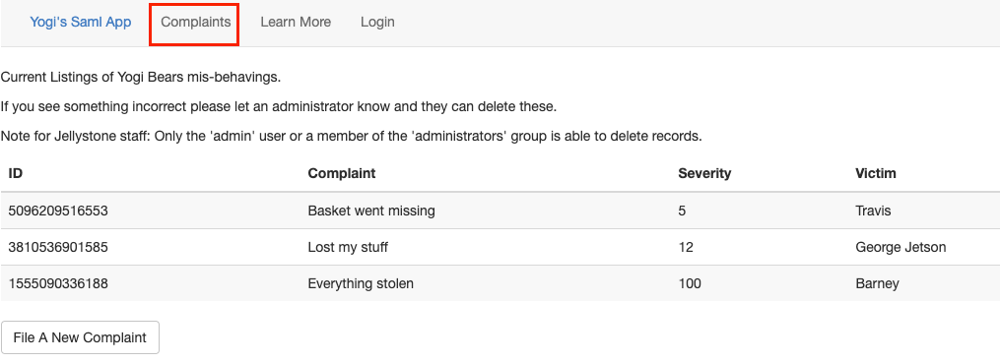

Yogi's Vulnerable SAML app
What is this thing?
I built this app because I wanted to better understand SAML and I wanted to know how to discover, exploit, and remediate vulnearbilities associated with implementations. I created an easily deployable docker environment here that can be spun up on a local machine in about 5 minutes. This includes a fully functional IDP and a Service Provider. The Service Provider has several configuration options that allow for post deployment on the fly adjustments to the security stance of the application. When its fully deployed the environment will be similar to the architecture below:

Not sure what SAML is or looking for a refesher? Check out the saml_overview page.
Back Story
For this scenario we are Yogi Bear. The Jellystone park staff have had enough of our stealing of picnic baskets. In an effort to track this behavior they have setup "Yogi's Saml App". This application allows park visitors to file complaints about our behavior.
Our goal as Yogi is to gain administrative access to the application via SAML implementation errors and delete the complaints. If we fail there is a possibility that we will be relocated to another park with no picnic baskets.
Setting up the test environment
Quick and Easy Deployment
The easiest way to get everything up and running is by cloning the repository and then simply running a quick docker-compose command. The compose command will build the images, and deploy them to the local host.
git clone https://github.com/yogisec/VulnerableSAMLApp.git
cd VulnerableSAMLApp
sudo docker-compose up
http://127.0.0.1:8000. The IDP will be listening at http://127.0.0.1. Head down to the Features section for login details and more information about the applications.
Split Host Deployment
In order to split the deployment across two seperate hosts (one an IDP, and the other a SP). We need to change some configuration details.First clone the repository onto both hosts:
git clone https://github.com/yogisec/VulnerableSAMLApp.git
cd VulnerableSAMLApp
configure_platform.py script. Work through the prompts filling in the information as requested to make the necessary edits to the IDP configuration files.
python3 configure_platform.py
Once completed we need to build our IDP container. We can do that with the following command:
cd vulnerableidp
sudo docker build -t idp:1.0 .
This will build a container with the name idp and the tag 1.0. Next run the container with:
sudo docker run -it --rm --name idp -d -p 80:80 idp:1.0
Confirm the container is running by running:
sudo docker ps
If its running we should see an output similar to:
189adee1b091 localhost/idp:1.0 apache2ctl -D FOR... 2 seconds ago Up 2 seconds ago 0.0.0.0:80->80/tcp idp
We can confirm the IDP is listening by running curl:
curl http://127.0.0.1
Next on the Service Provider host run the configure_platform.py script. Work through the prompts filling in the information as requested to make the necessary edits to the application configuration files.
python3 configure_platform.py
Once completed we need to build our container. We can do that with the following command:
cd vulnerablesp
sudo docker build -t sp:1.0 .
This will build a container with the name sp and the tag 1.0. The next step is to run the container. This can be done with:
sudo docker run -it --rm --name sp -d -p 8000:8000 sp:1.0
We can confirm the container is running by issuing:
sudo docker ps
This should produce an ouput similar to this:
94476aee1abf sp:1.1 "uwsgi --ini vulnsp.…" 4 minutes ago Up 4 minutes 0.0.0.0:8000->8000/tcp sp
We can confirm the application is up and listening by curling the interface with:
curl http://127.0.0.1:8000
At this point the IDP and the SP should be up and running and accessible. The next section will provide an overview of some of the features of the application.
Features of the environment
Login credentials can be found here: https://github.com/yogisec/VulnerableSAMLApp#login-credentials
| Username | Password | Description |
|---|---|---|
| yogi | bear | Basic user account, memeber of the 'users' group. No special permissions |
| admin | password | Regular administrator account, member of the admin group. This account has the ability to delete the complaints. |
| adminbutnot | password | This is account was registered specifically for CVE-2017-11427 |
| instructor | G0od-LuckGu3ssingThisButHeyItCouldHappenRight? | This account is allowed to reset the complain board back to its original state. Additionally this account was the ability to increase or decrease the security posture of the application. |
After successfully logging in we are presented with our profile as seen by the application. This is a quick and easy way to confirm which user we are, as well as our current group membership.

The complaints tab is where all of the complaints are stored and is the overall goal of the application.
In the screenshot below we have authenticated with the admin user account and have a new capability to delete complaints.
The instructor account has several special features to help maintain order within the application. There is a 'restore Complaints' button on the complaints page that reverts all of the complaits back to the starting state of the application.

The instructor account also has a new tab called Saml Settings. Within this tab we can make the application more or less security by checking the features we want to have turned on or off.

The Scenarios
| Setting | Description |
|---|---|
| Valid Assertion | This is the ideal security configuration. The Service Provider is checking for valid assertions, any tampering results in the message being rejected. |
| Want Messages Signed | |
| Valid Messages | |
| Sign MetaData | |
| CVE-2017-11427 | |
| Want Assertions Signed |
Note: for all of the SAML message tampering below for each of the scenarios I am leveraging the SAML Raider plugin for burp. It handles the decoding of the messages on the fly and allows for edits. It also supports XSW attacks which are currently beyond the scope of this application.
Nothing configured
For this scenario we'll use the security configuration pictured below.
Before we get to far into this scenario, I wanted to take a moment and say that this scenario, this configuration issue, is the MOST common implementation flaw that I come across.
Once we authenticate to our IDP we can make any changes to the SAML assertion that we want. The message will not be checked, the SP will simply process it as valid. The screenshot below shows the original assertion before tamper:


Once we pass the response payload along to the SP we are now an administrator within the application and as we can see below when we click on the complaints tab we now have the ability to delete all of the complaints.

We can even take it a step further if we'd like and replace all of the fields within the assertion with fake information similar to the picture below.

Above I mentioned that this configuration is the most common issue that I find when testing SAML implementations. The reason for this is because when most applications are initially configured to leverage saml the check box to make sure messages are secure is left unchecked. This allows the owners to validate that all of the backend configuration that occurs between the SP and the IDP is correctly configured without dealing with certificates. The unfortunate part is most of the time this is where things get left. The messages are left fully vulnerable to anyone who can authenticate to the IDP.
Valid Assertion
For this scenario we'll use the security configuration pictured below.

On the surface this seems like the ideal configuration. The Service Provider is checking for valid assertions, any tampering with the assertion attributes results in the message being rejected. In the picture below we have authenticated as the Yogi user account, and our assertion payload includes attributes about our account including our group membership 'users'.

We can attempt change the group membership to another group such as the 'administrators' group in the photo below.

Unfortunatly as we can see below the message is rejected because its not valid.

There is a big security flaw with this configuration. The SP is only checking that the assertion is valid IF its signed. The application does not have signed messages as a requirement. If we remove the entire signature block from our SAML payload the message can be changed
CVE-2017-11427
Valid Message
Want Messages Signed
Want Assertions Signed
Other attacks
There are several more types of vulnerabilities that could exist. Message replays, where an attacker sends a message after its TTL has expired. XSW attacks which take chunks of the SAML response and duplicate it and place it in various places within the response. In these scenarios the SP checks to see if a valid signed assertion/message/etc. exists and then processes the message. What if there are two assertions, the first valid, and signed but the second is not. Which will the application process? The first, second, last, cause it to crash?
The Yogi Vulnerable SP is not yet vulnerable to these attacks, but they're on the list.
References
Great References: